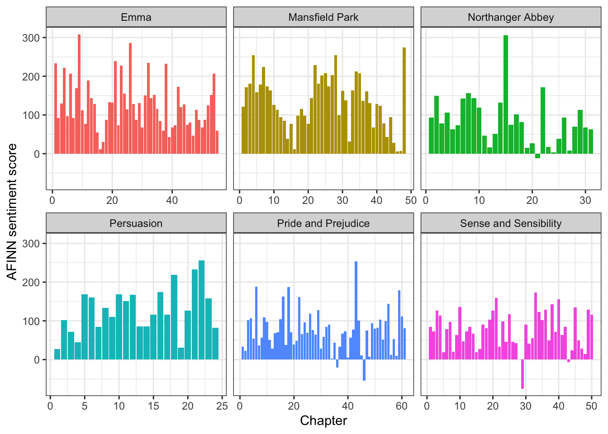

Problem Class 4
Background
Jane Austen wrote seven novels, and we consider six of these: Emma, Mansfield Park, Northanger Abbey, Persuasion, Pride and Prejudice and Sense and Sensibility.
All novels are available via Project Gutenberg and we will analyze similarities and differences of the different books in the following. We start by loading the text data which is available in the file “Data/JaneAusten.csv” on Moodle:
JaneAusten_raw <- read.csv("data/janeausten.csv" )We will analyze the six books and
Identify the most common words (except stop words) for each book
Extract the words with the highest term frequency - inverse document frequency
Compare the six books in terms of their sentiment
Word frequency analysis
As before, we first have to bring the data into a usable format and remove stop words.
Task 1: Split the lines of text into individual words and remove all stop words and underscores.
With the data in the desired format, we are ready to identify the most common words:
Task 2: Extract the ten most common words (excluding stop words) for each book.
After identifying the most frequent words, let’s visualize them. The following piece of code produces for each book a bar plot which visualizes the number of occurrences of the words identified in Task 2, i.e., the bar plot for a book provides information on the ten most common words (excluding stop words) contained in that book.
ggplot( JaneAusten_Count,
aes( x=Count, y=reorder_within(word,Count,title), fill=title ) ) +
facet_wrap( ~title, scales = "free" ) +
geom_col( show.legend = FALSE ) +
scale_y_reordered() + theme_bw() +
labs( x="Count", y="Word" )
Task 3: What is the benefit of using the functions reorder_within() and scale_y_reordered()? What do we conclude from the plot?
To conclude our analysis on the words used within the books, we want to calculate the tf-idf values for each term.
Task 4: Calculate the tf-idf value for each word and book. What do you conclude when considering the words with the highest tf-idf?
JaneAusten_Count %>%
bind_tf_idf( word, title, n ) %>%
arrange( desc(tf_idf) ) %>%
slice_head(n=20) title word n tf idf tf_idf
1 Sense and Sensibility elinor 685 0.018812996 1.7917595 0.03370836
2 Sense and Sensibility marianne 566 0.015544753 1.7917595 0.02785246
3 Persuasion elliot 289 0.011328003 1.7917595 0.02029706
4 Pride and Prejudice darcy 432 0.011019284 1.7917595 0.01974391
5 Emma weston 440 0.009446114 1.7917595 0.01692516
6 Pride and Prejudice bennet 339 0.008647077 1.7917595 0.01549348
7 Persuasion wentworth 218 0.008544998 1.7917595 0.01531058
8 Emma knightley 389 0.008351224 1.7917595 0.01496338
9 Emma elton 387 0.008308287 1.7917595 0.01488645
10 Pride and Prejudice bingley 310 0.007907356 1.7917595 0.01416808
11 Northanger Abbey catherine 487 0.020431280 0.6931472 0.01416188
12 Mansfield Park crawford 605 0.012738988 1.0986123 0.01399521
13 Emma emma 865 0.018570202 0.6931472 0.01287188
14 Emma woodhouse 315 0.006762559 1.7917595 0.01211688
15 Sense and Sensibility jennings 235 0.006454094 1.7917595 0.01156418
16 Northanger Abbey morland 148 0.006209095 1.7917595 0.01112521
17 Sense and Sensibility willoughby 216 0.005932273 1.7917595 0.01062921
18 Persuasion russell 148 0.005801192 1.7917595 0.01039434
19 Mansfield Park bertram 272 0.005727280 1.7917595 0.01026191
20 Northanger Abbey tilney 221 0.009271690 1.0986123 0.01018599Sentiment analysis
Let’s study the sentiment of the books using the AFINN sentiment lexicon:
AFINN <- read.csv( "Data/AFINN Sentiment Lexicon.csv" )We want to derive the sentiment score for each chapter in each book. To do this, we first need to identify which chapter each line belongs to. We can do this by adapting the code from Section 3.2 in the lecture notes:
The next step is to split the lines of text into individual words and to match the words in the AFINN sentiment lexicon with the words in the books. As for Jane Eyre, we remove the word “miss” from the analysis:
Task 5: Derive the aggregated sentiment score for each chapter using the AFINN sentiment lexicon.
`summarise()` has grouped output by 'title'. You can override using the
`.groups` argument.We produce plots which illustrate the sentiment for the different chapters and books as follows:

Task 6: What do we conclude?